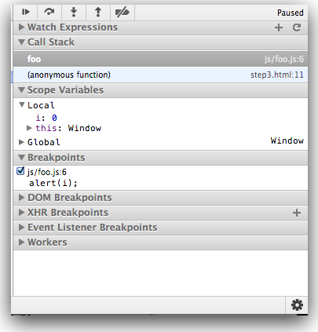
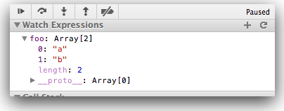

Objectives
Introduce the fundamentals of the javascript language. Be familiar with the different locations javascripts can be loaded from. Explore google chrome's javascripts capabilities. Learn about the basic types used in javascript
Getting Started
Anatomy of a Web Page
Before diving into JavaScript, it helps to understand how it aligns with the other web technologies.
HTML is for Content
HTML is a markup language used to define and describe content. Whether it be a blog post, a search engine result or an e-commerce site, the core content of a web page is written in HTML. A semantic markup, HTML is used to describe content in universal terms (headers, paragraphs, images, etc.).
CSS is for Presentation
CSS is a supplemental language that applies style to HTML documents. CSS is all about making content look better by defining fonts, colors and other visual aesthetics. The power of CSS comes from the fact that styling is not intermingled with content. This means you can apply different styles to the same piece of content, which is critical when building responsive websites that look good across a range of devices.
JavaScript is for Interactivity
In the browser, JavaScript adds interactivity and behavior to HTML content. Without JavaScript, web pages would be static and boring. JavaScript helps bring a web page to life.
Look at this simple HTML page that includes CSS and JavaScript to see how it all fits together:
<html>
<head>
<title>Hello World</title>
<!-- CSS for presentation -->
<style type="text/css">
h1 { font-size: 14px; color: hotpink; }
button { color: red; }
</style>
<!-- JavaScript for interactivity -->
<script type="text/javascript">
function buttonClick()
{
alert("Hello!");
}
</script>
</head>
<body>
<h1>Hello World</h1>
<button onClick="buttonClick();">Click Me!</button>
</body>
</html>In the example above, HTML is used to describe the content. The "Hello World" text is described as a heading with the <h1> tag and "Click Me!" is described as a button with the <button> tag. The <style> block contains CSS that changes the font-size and color of the header text. The <script> block contains JavaScript that adds interactivity to the button. When a user clicks on the button, an alert message will appear that says "Hello!".
A Scripting Language for the Web
JavaScript was originally designed to add interactivity to web pages, not to be a general programming language, which makes it a scripting language. Scripting languages are regarded to be more productive than general languages because they are optimized for their specific domain (in this case, the web browser). However, recent advancements have brought JavaScript to the server-side (via Node.js) so it can now be used in place of languages like PHP, Ruby or ASP. This guide will focus exclusively on JavaScript running in the browser with jQuery.
The name "JavaScript" is a bit misleading. Despite the similarity in name, JavaScript has no relationship with Java), a general purpose language. JavaScript is based on an Open Web standard called ECMAScript. Standards-based languages are not controlled by any one entity or corporation - instead, developers work together to define the language, which is why JavaScript will run in every web browser regardless of the operating system or device.
What You Need to Get Started with JavaScript and jQuery
- Web Browser
- Text Editor
- Developer Tools (optional)
One of JavaScript's greatest strengths is its simplicity. It can be written and run on any operating system, and the only requirements are a web browser and a text editor. There are also numerous tools that can make JavaScript development more productive, but they are completely optional.
Developer Tools
Commonly referred to as "developer tools," many browsers ship with built-in features that provide better insight into JavaScript and jQuery while they run in the browser. Although they aren't required, you may find developer tools helpful when it comes to debugging errors in your code. Check out these browsers' developer tools:
- Apple Safari
- Google Chrome Developer Tools
- Microsoft Internet Explorer
- Mozilla Firefox Web Development Tools
- Opera Dragonfly
Exercises
1.1: JS Eclipse Project
In eclipse, create a new project of type 'JavaScript'. Do this by selecting Eclipse->File->New and scroll down until you see "Javascript->Project". Call the project 'js-lab-1' and accept all defaults. It should look like this:
Create a new file in the project called 'step1.html'. Copy the contents of the html file above into this file. Open the file in a the html editor:
and also open the file in the built in eclipse web browser:
Press the button above and note the appearance of a simple message box.
1.2: Google Chrome Integration
Examine the following screenshot. Note how google chrome is available on the context menu when we attempt to open the step1.html file.
This is because google chrome is associated with the '.html' file type in eclipse. If you locate the Eclipse Preferences panel:

you may see how this can be configured. Simply add a new application - and from the subsequent dialog select chrome. Now open the step1.html file in chrome form within eclipse.
You should be able to view page source via the context menu:
In addition, we will be making heavy use of the "Developer Tools". These are available via the "Customise and Control" button in the top right:

When selected, the chrome window will look like this:
Select the "Sources" tab and select the small button on the top left of the sources panel - this will display the currently in scope 'sources':
Select 'step.html'. To tools panel will look like this:
In subsequent steps we will be very interested in exploring this panel, particularly the "Variables" and "Expressions" views on the right.
Running Code
External
The first and recommended option is to write code in an external file (with a ".js" extension), which can then be included on our web page using an HTML <script> tag and pointing the src attribute to the file's location. Having JavaScript in a separate file will reduce code duplication if you want to reuse it on other pages. It will also allow the browser to cache the file on the remote client's computer, decreasing page load time.
<!--Code is written in a .js file, then included via the script tag src attribute.-->
<script src="/path/to/example.js"></script>Inline
The second option is to inline the code directly on the web page. This is also achieved using HTML <script> tags, but instead of pointing the src attribute to a file, the code is placed between the tags. While there are use cases for this option, the majority of the time it is best to keep our code in an external file as described above.
<!--Embed code directly on a web page using script tags.-->
<script type="text/javascript">
alert("Hello World!");
</script>Attributes
The last option is to use the event handler attributes of HTML elements. This method is strongly discouraged:
<!--Inline code directly on HTML elements being clicked.-->
<a href="javascript:alert("Hello World!");">Click Me!</a>
<button onClick="alert("Good Bye World");">Click Me Too!</a>Placement
Placement of the previous two options is important and can vary depending on the situation. If you are including JavaScript that doesn't access the elements on the page, you can safely place the script before the closing HTML <head> tag. However, if the code will interact with the elements on the page, you have to make sure those elements exist at the time the script is executed. This common pitfall can be seen in the example below. The script for finding the element with the ID "hello-world" will be executed before the element is defined in the document.
<!--Attempting to access an element too early will have unexpected results.-->
<!doctype html>
<html>
<head>
<script type="text/javascript">
var title = document.getElementById("hello-world");
console.log( title );
</script>
</head>
<body>
<h1 id="hello-world">Hello World</h1>
</body>
</html>It is a common pattern to move scripts to the bottom of the page, prior to the closing HTML <body> tag. This will guarantee that elements are defined when the script is executed.
<!--Moving the script to the bottom of the page will make sure the element exists.-->
<!doctype html>
<html>
<head>
</head>
<body>
<h1 id="hello-world">Hello World</h1>
<script type="text/javascript">
var title = document.getElementById("hello-world");
console.log( title );
</script>
</body>
</html>Exercises
2.1 Placement
Incorporate the last two html doocuments into two html file in your js-labs-1 project:
- step1a.html
- step2b.html
Open both files in the google chrome browser. Show the developer tools, and examine the console:
step1a.html

step1b.html

Note the difference. Can you see the reason?
2.1 DOM Access
Introduce some more html elements into the page. By copying the code in the example, see if you can log these elements to the console
Syntax Basics
Comments
JavaScript has support for single and multi-line comments. Comments are ignored by the JavaScript engine and therefore have no side-effects on the outcome of the program. Use comments to document the code for other developers. Libraries like JSDoc are available to help generate project documentation pages based on commenting conventions.
// Single and multi line comments.
// this is an example of a single line comment.
/*
* this is an example
* of a
* multi line
* comment.
*/Whitespace
Whitespace is also ignored in JavaScript. There are many tools that will strip out all the whitespace in a program, reducing the overall file size and improving network latency. Given the availability of tools like these, whitespace should be leveraged to make the code as readible as possible.
// Whitespace is insignificant.
var hello = "Hello";
var world = "World!";// Semantic whitespace promotes readibility.
// Readible code is good!
var foo = function()
{
for ( var i = 0; i < 10; i++)
{
alert(i);
}
};
foo();
// This is much harder to read!
var foo=function() {for(var i=0;i<10;++){alert(i);}};foo();Reserved Words
There are a handfull of reserved words that can't be used when declaring user-defined variables and functions. Some of these reserved words are currently implemented, some are saved for future use, and others are reserved for historical reasons. A list of words and in-depth explanations for each can be found on the MDN JavaScript Reference site.
Identifiers
Identifiers are used to give variables and functions a unique name so they can subsequently be referred to by that name. The name of an identifier must follow a few rules:
- Cannot be a reserved word.
- Can only be composed of letters, numbers, dollar signs, and underscores.
- The first character cannot be a number.
It's a best practice to name identifers in a way that will make sense to you and other developers later on.
// Valid identifier names.
var myAwesomeVariable = "a";
var myAwesomeVariable2 = "b";
var my_awesome_variable = "c";
var $my_AwesomeVariable = "d";
var _my_awesome_variable_$ = "e";Exercises
3.1: Comments
For the javascript code you introduced in the previous step, experiment with commenting our different sections. Get used to commenting out single lines, or entire sections.Make sure you test that the commented out sections are actually not executed. i.e., open the files in chrome and inspect the console. While the files are open in chome, make an change in eclipse, get used to reloading the already open pages in chrome.
3.2: Running JavaScript Programs
Create a new file in the js-labs-1 project called 'step3.html'. Replace its contents with the following:
<!doctype html>
<html>
<head>
<script src="js/foo.js"></script>
</head>
<body>
<h1 id="hello-world">Hello World</h1>
<script type="text/javascript">
foo();
</script>
</body>
</html>Now create a new folder in the js-lab-1 project called 'js'. Create an empty file in this folder called 'foo.js'. Your project should look like this:
Edit the 'foo.js' file, and paste in the following:
var foo = function()
{
for ( var i = 0; i < 10; i++)
{
alert(i);
}
};Now open the step3.html file in chrome. As you open the page you see the alert dialog appearing (10 times):

Once you have clicked through these - open the developer tools again - and select "Sources". Press the "Navigator" button (small button on top left) and locate and display the foo.js file:
Back in eclipse, change the loop to show the alert 3 times. Reload the page and verify this works as expected.
3.2: Debugging JavaScript Programs
In Chrome Sources view, click on margin alongside the alert line - this should place a marker as shown:
Reload the page again - reload the page. This time the behaviour will be a little different:
Now the javascript program is paused - because the marker we set down above is a 'breakpoint'. This means the programs is waiting your command to resume. Look closely at the panel on the bottom right:

Hover on the 5 buttons along the top for a few seconds each - and read the tooltip. Experiment with each one in turn and see if you can figure out its behaviour.
In particular, experiment with the 'step over..' and 'step into...' buttons. Monitor the "Scope Variables" panel while you are doing this:
and note the changes to the value of i.
Types
Types in JavaScript fall into two categories: primitives or objects. Primitive types include:
- String
- Number
- Boolean
- Null
- Undefined
String
Strings are text wrapped in single or double quotation marks. It is best practice to consistently use one or the other. There may be times when the string contains quotation marks that collide with the ones used to create the string. In this case, either escape the characters using a \ backslash or use different quotes around the string.
// Strings can created with double or single quotes.
var a = "I am a string";
var b = 'So am I!';
alert( a );
alert( b );// Sometimes a string may contain quotation marks.
var statement1 = 'He said "JavaScript is awesome!"';
var statement2 = "He said \"JavaScript is awesome!\"";Exercise 4.1: Strings & Objects
Create a new File called 'step4.html' in your current project, and incorporate the following :
<!doctype html>
<html>
<head>
<script src="js/types.js"></script>
</head>
<body>
<h1 id="Hello Types">Hello World</h1>
</body>
</html>Note the src attribute in the script tag - create a corresponding javascript file called types.js in your project:
Into types.js paste in the fragments from above:
var a = "I am a string";
var b = 'So am I!';
alert( a );
alert( b );
var person1 = new Object;
person1.firstName = "John";
person1.lastName = "Doe";
alert(person1.firstName + " " + person1.lastName);Now open the step4.html file in chrome and click through the alerts. Then open the "Sources" tab and open the 'types.js' file and set a breakpoint (by clicking on the margin) on the second line:
Reload the page again note that you will be in 'debug' mode:
Single step through the lines and observe.
The "Scope Variables" view is not much use here. Instead select locate the 'Watch Expressions' and press the "+" button:
enter the name of a variable - 'a' in this instance - and press return:
Experiment with the debug buttons - particularly the 'Step over' and 'Step into' buttons.
See if you can monitor the 'person1' object - you should be able to view it's contents something like this:

You can restart the 'program' at any stage by reloading the page in Chrome.
Number
Number types are any positive or negative numeric value. There is no distinction between integer and floating point values.
// Numbers are any whole or floating point integer.
var num1 = 100;
var num2 = 100.10;
var num3 = 0.10;Boolean
Boolean types are either true or false.
// Boolean values.
var okay = true;
var fail = false;Null and Undefined
Null and undefined are special types in JavaScript. Null types are a value that represent the absence of a value, similar to many other programming languages. Undefined types represent a state in which no value has been assigned at all. This type is created in two ways: by using the undefined keyword or by not defining a value at all.
// Two ways to achieve an undefined value.
var foo = null;
var bar1 = undefined;
var bar2;Exercise 4.3: Numbers, Null and Undefined
Bring in the fragments above and single step through the code as we have been doing. See if you can 'watch' each of the new variables. At the the end of the script your 'watch expressions' view could look like this:

If you reload the page and break at the very first line, then the watch expressions will look like this:
Step through the program again and observe the variables change from undefined as values are assigned.
Objects & Arrays
Everything else is in JavaScript is considered an Object. While there are numerous built-in objects, here we focus on:
- Object
- Array
- Function
The simplest way to create an object is either through the Object constructor or the shorthand syntax known as object literal. These simple objects are unordered key/value pairs. The key is formally known as a property and the value can be any valid JavaScript type, even another object. To create or access a property on an object, we use what is known as "dot notation" or "bracket notation."
// Creating an object with the constructor:
var person1 = new Object;
person1.firstName = "John";
person1.lastName = "Doe";
alert( person1.firstName + " " + person1.lastName );
// Creating an object with the object literal syntax:
var person2 =
{
firstName: "Jane",
lastName: "Doe"
};
alert( person2.firstName + " " + person2.lastName );// As mentioned, objects can also have objects as a property.
var people = {};
people["person1"] = person1;
people["person2"] = person2;
alert( people["person1"].firstName );
alert( people["person2"].firstName );If a property is accessed that has not been defined, it will return a type of undefined.
// Properties that have not been created are undefined.
var person = { name: "John Doe" };
alert( person.email ); // => undefinedObjects are covered further in the later in more detail.
Exercise 5.1
Create a new file called 'step5.html' as usual. It should contain the same code as step4, except the script it refers to should be called 'objects.js'. Create the script in the js folder, and incorporate the following code from above:
// Creating an object with the object literal syntax:
var person2 =
{
firstName: "Jane",
lastName: "Doe"
};
alert( person2.firstName + " " + person2.lastName );Set a breakpoint on the alert line - and reload the page such that us suspends here. Observe the "Watch Expression" panel:

It is 'polluted' with the variable we were observing in the last step. Remove all these by clicking just to the left of the variable name. Now add and observer 'person2':

Now append the following code to the above:
var person1 = new Object;
person1.firstName = "John";
person1.lastName = "Doe";
// As mentioned, objects can also have objects as a property.
var people = {};
people["person1"] = person1;
people["person2"] = person2;
alert( people["person1"].firstName );
alert( people["person2"].firstName );In particular, see if you can explore the people object in the Watch Expression panel:

Array
Arrays are a type of object that are ordered by the index of each item it contains. The index starts at zero and extends to however many items have been added, which is a property of the array known as the "length" of the array. Similar to a basic object, an array can be created with the array constructor or the shorthand syntax known as array literal.
// Creating an array with the constructor:
var foo = new Array;
// Creating an array with the array literal syntax:
var bar = [];There is an important distinction to be made between the two. Both an array construnctor and an array literal can contain items to be added to the array upon creating it. However, if just a single numeric item is passed in, the array constructor will assume its length to be that value.
// The array literal returns a bar.length value of 1:
var foo = [ 100 ];
// => 100
alert( foo[0] );
// => 1
alert( foo.length );
// The array constructor returns a bar.length value of 100:
var bar = new Array( 100 );
// => undefined
alert( bar[0] );
// => 100
alert( bar.length );An array can be manipulated through methods that are available on the instance of the array. Items in the array can be accessed using bracket notation with a given. If the index does not exist or contains no value, the return type will be undefined.
A few common array methods are shown below:
// Using the push(), pop(), unshift() and shift() methods on an array
var foo = [];
foo.push("a");
foo.push("b");
alert( foo[ 0 ] ); // => a
alert( foo[ 1 ] ); // => b
alert( foo.length ); // => 2
foo.pop();
alert( foo[ 0 ] ); // => a
alert( foo[ 1 ] ); // => undefined
alert( foo.length ); // => 1
foo.unshift("z");
alert( foo[ 0 ] ); // => z
alert( foo[ 1 ] ); // => a
alert( foo.length ); // => 2
foo.shift();
alert( foo[ 0 ] ); // => a
alert( foo[ 1 ] ); // => undefined
alert( foo.length ); // => 1There are many more methods for manipulating arrays, some of which are covered further in the Arrays section. Details can be found on the Mozilla Developer Network.
Exercise 5.1
Comment out all of the code we have so far using the multi-line comment
/*
...
*/Incorporate some of the array examples above and single step though them. Carefully explore the arrays in the "Watch Expressions" panel. Note the appearance of an array in that panel:

Contrast it with how an object looked earlier:
Can you see how similar they are?
Operators
Basic operators allow you to manipulate values.
// Concatenation
var foo = "hello";
var bar = "world";
console.log( foo + " " + bar ); // "hello world"// Multiplication and division
2 * 3;
2 / 3;// Incrementing and decrementing
// The pre-increment operator increments the operand before any further processing.
// pre-increment:
var i = 1;
console.log( ++i ); // 2
console.log( i ); // 2
// The post-increment operator increments the operand after processing it.
// post-increment:
var i = 1;
console.log( i++ ); // 1 - because i was 1
console.log( i ); // 2 - incremented after using itOperations on Numbers & Strings
In JavaScript, numbers and strings will occasionally behave in unexpected ways.
// Addition vs. Concatenation
var foo = 1;
var bar = "2";
console.log( foo + bar ); // 12// Coercing a string to act as a number:
var foo = 1;
var bar = "2";
console.log( foo + Number(bar) ); // 3The Number constructor, when called as a function (as in the above example), will have the effect of casting its argument into a number. The unary plus operator also does the same thing:
// Forcing a string to act as a number (using the unary plus operator):
console.log( foo + +bar ); // 3Exercise 6.1: Operators
Duplicate step5.html to a new file step6.html - and also create a new js file 'operators.js'. Link the script to the html file in the usual way. Incorporate the following code into the js file:
var foo = 1;
var bar = "2";
console.log( foo + bar );
var foo = 1;
var bar = "2";
console.log( foo + Number(bar) );
console.log( foo + +bar );Run this program and observe the results.
Logical Operators
Logical operators allow evaluation of a series of operands using AND ( && ) and OR ( || ) operations.
// Logical AND and OR operators
var foo = 1;
var bar = 0;
var baz = 2;
// returns 1, which is true
foo || bar;
// returns 1, which is true
bar || foo;
// returns 0, which is false
foo && bar;
// returns 2, which is true
foo && baz;
// returns 1, which is true
baz && foo;In the above example, the || operator returns the value of the first truthy operand, or in cases where neither operand is truthy, it returns the last operand. The && operator returns the value of the first false operand, or the value of the last operand if both operands are truthy.
You'll sometimes see developers use these logical operators for flow control instead of using if statements. For example:
// do something with foo if foo is truthy
foo && doSomething( foo );
// set bar to baz if baz is truthy;
// otherwise, set it to the return
// value of createBar()
var bar = baz || createBar();This style is quite elegant and pleasantly terse; that said, it can be really hard to read or use, especially for beginners. See the section on truthy and falsy things in the Conditional Code article for more about evaluating truthiness.
Comparison Operators
Comparison operators allow you to test whether values are equivalent or whether values are identical.
// Comparison operators
var foo = 1;
var bar = 0;
var baz = "1";
var bim = 2;
foo == bar; // false
foo != bar; // true
foo == baz; // true; but note that the types are different
foo === baz; // false
foo !== baz; // true
foo === parseInt( baz ); // true
foo > bim; // false
bim > baz; // true
foo <= baz; // trueFor more information about comparison operators, visit the Mozilla Developer Network.
Exercise 6.2: Operators
Create a step6.html + operators.js file in the usual manner.
Incorporate the 'logical operators' code fragment from above - and debug through them to verify the true/false values are as indicated.